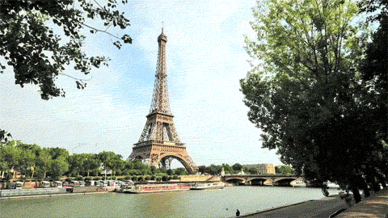
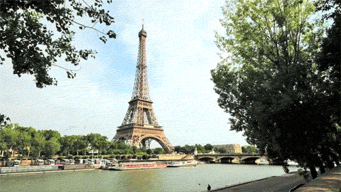
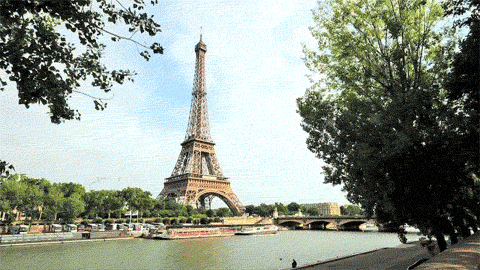
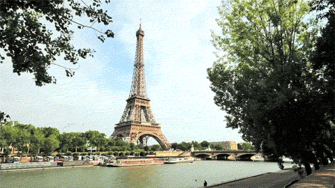

parris : city and capital of France
 



For centuries Paris has been one of the world’s most important and attractive cities. It is appreciated for the opportunities it offers for business and commerce, for study, for culture, and for entertainment; its gastronomy, haute couture, painting, literature, and intellectual community especially enjoy an enviable reputation. Its sobriquet “the City of Light” (“la Ville Lumière”), earned during the Enlightenment, remains appropriate, for Paris has retained its importance as a centre for education and intellectual pursuits. Paris’s site at a crossroads of both water and land routes significant not only to France but also to Europe has had a continuing influence on its growth. Under Roman administration, in the 1st century BCE, the original site on the Île de la Cité was designated the capital of the Parisii tribe and territory. The Frankish king Clovis I had taken Paris from the Gauls by 494 CE and later made his capital there. Under Hugh Capet (ruled 987–996) and the Capetian dynasty the preeminence of Paris was firmly established, and Paris became the political and cultural hub as modern France took shape. France has long been a highly centralized country, and Paris has come to be identified with a powerful central state, drawing to itself much of the talent and vitality of the provinces.
In its location on the western side of Europe and in a plain relatively close to the sea, Paris benefits from the balmy influences of the Gulf Stream and has a fairly temperate climate. The weather can be very changeable, however, especially in winter and spring, when the wind can be sharp and cold. The annual average temperature is in the lower 50s F (roughly 12 °C); the July average is in the upper 60s F (about 19 °C), and the January average is in the upper 30s F (about 3 °C). The temperature drops below freezing for about a month each year, and snow falls on approximately half of those days. The city has taken measures to decrease air pollution, and a system of water purification has made tap water safe for drinking.
For almost all of its long history, except for a few brief periods, Paris was governed directly by representatives of the king, emperor, or president of France. The city was not granted municipal autonomy by the National Assembly until 1974. The first modern elected mayor of Paris was Jacques Chirac, elected 20 March 1977, becoming the city's first mayor since 1871 and only the fourth since 1794. The current mayor is Anne Hidalgo, a socialist, first elected 5 April 2014 and re-elected 28 June 2020. The mayor of Paris is elected indirectly by Paris voters; the voters of each of the city's 20 arrondissements elect members to the Conseil de Paris (Council of Paris), which subsequently elects the mayor. The council is composed of 163 members, with each arrondissement allocated a number of seats dependent upon its population, from 10 members for each of the least-populated arrondissements to 34 members for the most populated. The council is elected using closed list proportional representation in a two-round system. Party lists winning an absolute majority in the first round – or at least a plurality in the second round – automatically win half the seats of an arrondissement. The remaining half of seats are distributed proportionally to all lists which win at least 5% of the vote using the highest averages method. This ensures that the winning party or coalition always wins a majority of the seats, even if they do not win an absolute majority of the vote. Each of Paris's 20 arrondissements has its own town hall and a directly elected council (conseil d'arrondissement), which, in turn, elects an arrondissement mayor. The council of each arrondissement is composed of members of the Conseil de Paris and also members who serve only on the council of the arrondissement. The number of deputy mayors in each arrondissement varies depending upon its population. There are a total of 20 arrondissement mayors and 120 deputy mayors.
Paris is one of the few world capitals that has rarely seen destruction by catastrophe or war. For this, even its earliest history is still visible in its streetmap, and centuries of rulers adding their respective architectural marks on the capital has resulted in an accumulated wealth of history-rich monuments and buildings whose beauty played a large part in giving the city the reputation it has today. At its origin, before the Middle Ages, the city was composed of several islands and sandbanks in a bend of the Seine; of those, two remain today: Île Saint-Louis and the Île de la Cité. A third one is the 1827 artificially created Île aux Cygnes. Modern Paris owes much of its downtown plan and architectural harmony to Napoleon III and his Prefect of the Seine, Baron Haussmann. Between 1853 and 1870 they rebuilt the city centre, created the wide downtown boulevards and squares where the boulevards intersected, imposed standard facades along the boulevards, and required that the facades be built of the distinctive cream-grey "Paris stone". They also built the major parks around the city centre.[131] The high residential population of its city centre also makes it much different from most other western major cities.
Paris has for centuries been regarded as the main cultural powerhouse of the Western world, a magnet for artists and intellectuals and a place where new ideas originate and art reigns supreme. This notion was especially true in the early part of the 20th century, when the city was favoured by numerous expatriate writers and artists, including Ernest Hemingway from the United States, James Joyce from Ireland, Pablo Picasso from Spain, and Amedeo Modigliani from Italy. While some critics have maintained that Parisian culture has become more a matter of show and dazzle than of true creativity, the city’s cultural life is still highly active and distinctive. Parisians love novelty, have an abounding intellectual curiosity, know how to dress up the simplest cultural event with flair and elegance, and are avid patrons of the arts, so the theatres and concert halls, museums, art galleries, and art cinemas are always well attended.
Paris has been predominantly Catholic since the early Middle Ages. However, religious attendance is now low. A majority of Parisians are still nominally Catholic. Christianity, and more particularly Catholicism, remains the dominant religion in France. Around two-thirds of French people identify as Christian, with about 83% of that number identifying as Roman Catholic and 14% identifying as Protestant. Only a minority of French people regularly participate in religious worship. Practice is greatest among the middle classes. Roughly 4.5% of Catholics attend mass and overall, adherence to Catholicism is declining. France protects the freedom of individuals to choose, change, and practice their religion. Interference with freedom of religion is subject to criminal penalties, including a fine of €1,500 ($1,600) and imprisonment for one month.